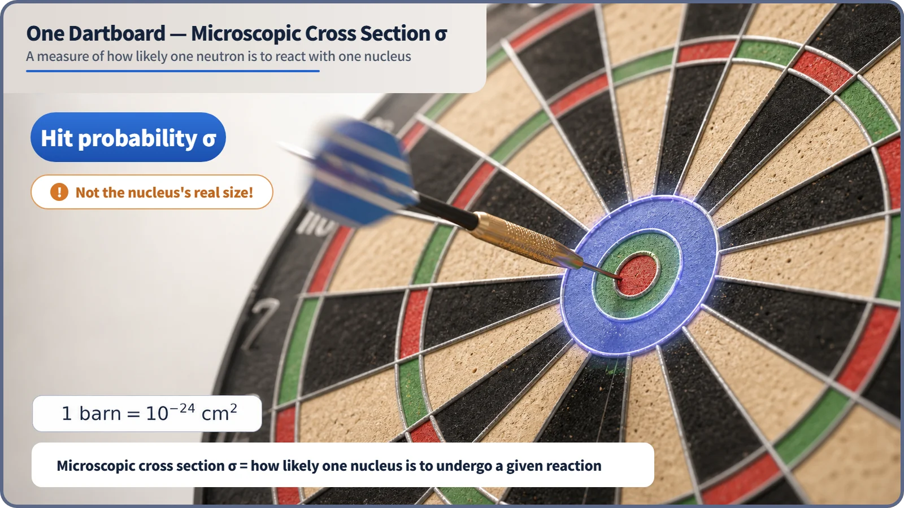
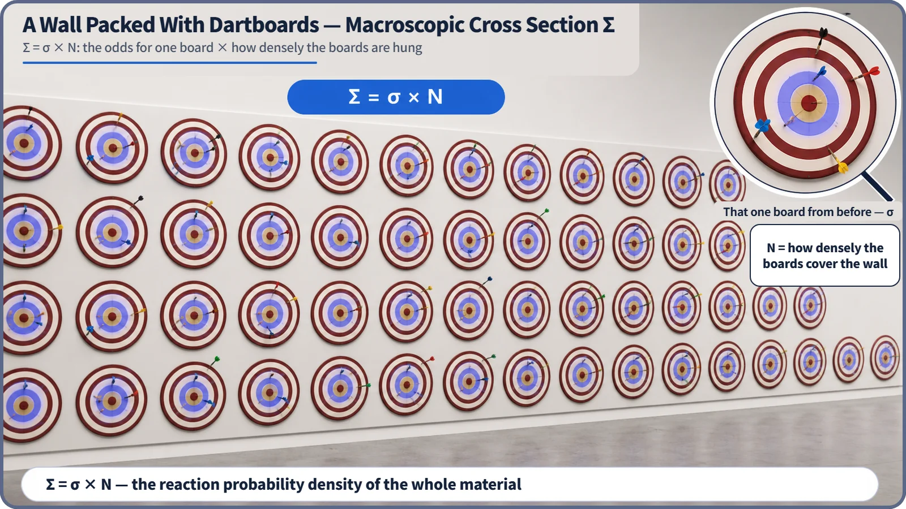

Neutron Physics & the Core · 078
One Dartboard vs. a Wall Full of Them — Microscopic and Macroscopic Cross Sections
σ is the odds for one nucleus; Σ = σ × N is the odds for the whole material.
The microscopic cross section σ measures how likely a reaction is when one neutron meets one nucleus; the macroscopic cross section Σ = σ × N gives the reaction probability density for a whole material. Despite its area unit, the barn, a cross section is a probability measure, not the real size of the nucleus. [1]
One board, or a whole wall?
Throw a dart at a single dartboard and it may hit or miss. That chance depends on the board itself and on you, not on the lighting or the room. Now cover an entire wall with dartboards packed side by side: a dart thrown almost anywhere will hit something, and the result depends on how densely the boards are packed, too.
The chance that a neutron reacts with a nucleus comes in the same two levels: the probability for a single nucleus, and the probability for the whole material those nuclei fill. These are the microscopic cross section and the macroscopic cross section.
The odds of hitting one board: the microscopic cross section
The microscopic cross section, written σ, expresses the probability that a particular reaction, such as scattering, absorption or fission, happens when one neutron meets one nucleus. It is measured in barns, and 1 barn = 10⁻²⁴ cm², a unit of area. A nucleus on which a reaction happens readily is described as if it had a bigger dartboard. σ differs from nucleus to nucleus, from reaction to reaction, and with the neutron's energy. [2]
A cross section is not the real physical size of the nucleus. The geometric area of a nucleus stays at roughly a few barns, while reaction cross sections can be much smaller, or millions of times larger, depending on conditions. For thermal neutrons, the fission cross section of uranium-235 is about 580 to 585 barns, while xenon-135, produced after fission, has a thermal-neutron absorption cross section of around 2.6 million barns (about 2.6 × 10⁶ barns). Exact values differ slightly between nuclear data libraries. The xenon nucleus hasn't swollen; the reaction is simply exceptionally likely under those conditions. [3]

A wall packed with boards: the macroscopic cross section Σ
On a wall lined with dartboards, the chance of hitting somewhere on the wall depends on the odds for one board and on how densely the boards are hung. In reactor physics, this reaction probability density for the whole material is the macroscopic cross section:
Σ = σ × N
| Quantity | Meaning | Unit |
|---|---|---|
| σ | microscopic cross section: odds for one nucleus (one dartboard) | barn (10⁻²⁴ cm²) |
| N | number density: nuclei per unit volume (how densely the boards hang), from density, molar mass and Avogadro's number | nuclei/cm³ |
| Σ | macroscopic cross section: reaction probability density per 1 cm of neutron travel | cm⁻¹ |
σ is a property of one nucleus and does not depend on whether the material is a gas or a solid. Σ belongs to the whole material: for the same water or uranium, a different density or enrichment changes N, and therefore Σ. Same boards (σ), more of them on the wall (N): a bigger chance of hitting the wall (Σ). [2]

How these numbers are used in a real core
Engineers check cross-section data whenever they choose a core material. Control rods must absorb neutrons reliably, so they use materials with a large absorption cross section; coolant and structural materials should not swallow neutrons needlessly, so a small absorption cross section is preferred. Borated water works because boron has a large absorption cross section.
Cross sections are split by reaction type: σ_a for absorption, σ_f for absorptions that lead to fission, σ_s for scattering and σ_t for the total, with matching Σ_a, Σ_f, Σ_s and Σ_t. They are the raw ingredients of the neutron balance. For mixtures, such as the uranium isotopes in fuel or the hydrogen and oxygen in coolant, the macroscopic cross sections of the components are simply added.
Key takeaways
σ measures reaction probability for one nucleus, in barns (1 barn = 10⁻²⁴ cm²), and is not the nucleus's physical size. Σ = σ × N is the reaction probability density of the whole material, in cm⁻¹. Together they are basic ingredients of reactor design and analysis.